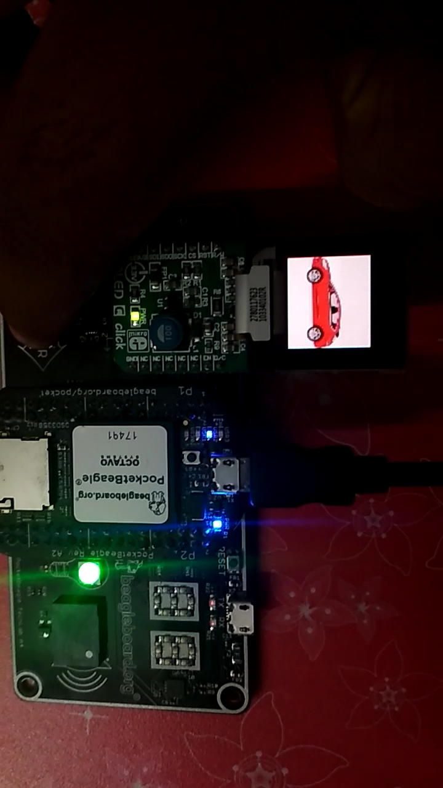
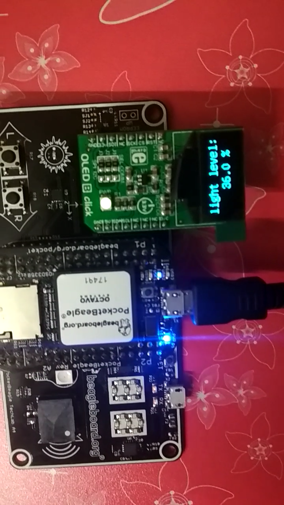
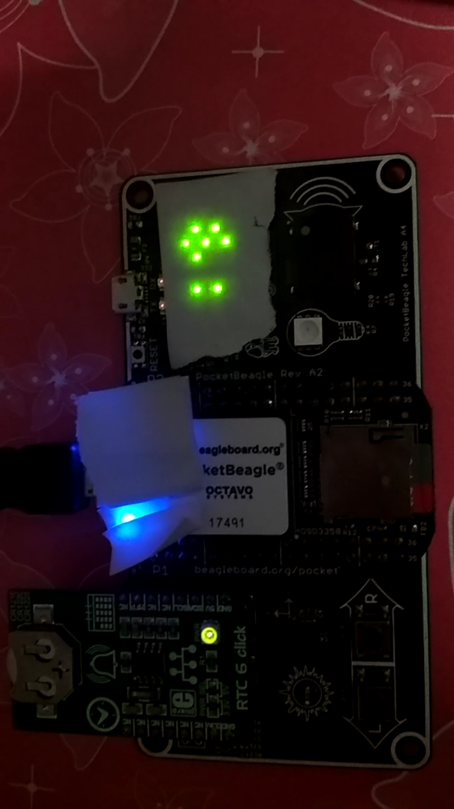

GBSIM Techlab Cape Examples
This post contains a demonstration of using the peripherals on Techlab cape along with Mikroe Click Boards interfaced through the GBSIM Greybus Simulator, This post assumes that GBSIM and insclick utilities are correctly installed and setup in your board.
Start GBSIM
Before starting to load the clicks and running the examples, start gbsim whether using the start script or by separately modprobe the modules and running gbsim.
sudo sh startgbsim.shClone the Examples Repository
git clone https://github.com/vaishnav98/gbsim-techlab-examples.git
cd gbsim-techlab-examplesOLED C Click Example
This example has an OLED C Click plugged into the Mikrobus Slot of the Techlab Cape and Displays a slideshow images on the OLED C Screen, the buttons(L and R) on the Techlab Cape can be used to change the currently displayed image.
Running the example
Connect the OLED C Click to the Techlab Cape Mikrobus Slot, Now using the insclick CLI Utility the OLED C Click can be loaded using the command
sudo insclick oledc p1If the setup was successful, random text and a blinking cursor will be displayed on the OLED screen, now run the examples using the following commands:
cd oledc
python main.pyOutput
The output of the example should be similar to this:
Now on pressing the buttons(L and R) on the Techlab Cape should display different images on the display. For more information about the code, see a similar project here : https://beagleboard.org/p/103416/standalone-magic-8-ball-pocketbeagle-mikro-click-boards-4f1bb4
To change the images being displayed, the images img*.jpg on the oledc/ directory can be replaced with your images, please note that the oledc screen has an usable size of 128px X 128px and the images has to be resized to fit that particular size(ideally 96px X 96px).
Unloading the Click
After trying out the example unload the click using the rmclick Utility:
The oledc click can be removed by running the following command:
sudo ./rmclick oledcOLED B Click Example
This example has an OLED B Click plugged into the Mikrobus Slot of the Techlab Cape and continously Displays the light intensity level measured by the Light Sensor in the Techlab Cape to the OLED Display.
Running the example
Connect the OLED B Click to the Techlab Cape Mikrobus Slot, Now using the insclick CLI Utility the OLED B Click can be loaded using the command
sudo insclick oledb p1If the setup was successful, random text and a blinking cursor will be displayed on the OLED screen, now run the examples using the following commands:
cd oledb
sudo python main.pyOutput
The output of the example should be similar to this:
Now on changing the light intensity level received by the sensor , the corresponding reading on the OLED display will change accordingly.
Unloading the Click
After trying out the example unload the click using the rmclick Utility:
The oledb click can be removed by running the following command:
sudo ./rmclick oledbRTC 6 Click Example
This example has an RTC 6 Click plugged into the Mikrobus Slot of the Techlab Cape and continously Displays the current time obtained from the RTC to the LED 7 Segment Displays on the Techlab Cape , as there are not enough 7-seg displays available to display the time simultaneously, the example first displays Hours for 2 times, then minutes and then seconds.
Running the example
Connect the RTC 6 Click to the Techlab Cape Mikrobus Slot, Now using the insclick CLI Utility the RTC 6 Click can be loaded using the command
sudo insclick rtc6 p1If the setup was successful, a new rtc device willbe created at /dev/rtc1, now run the examples using the following commands:
cd rtc
sudo python main.pyOutput
The output of the example should be similar to this:
Now the current time will be displayed on the 7-seg led displays on the cape continously.
Unloading the Click
After trying out the example unload the click using the rmclick Utility:
The rtc6 click can be removed by running the following command:
sudo ./rmclick rtc6